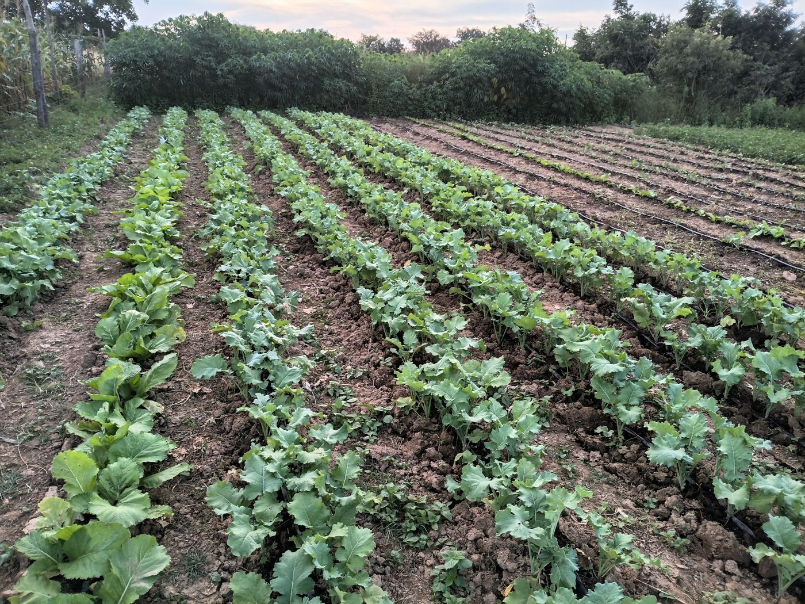
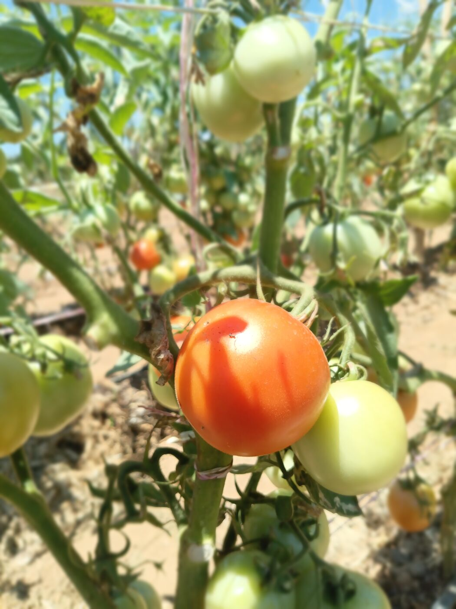

Growing Zambia's indigenous crops into lasting value chains.
Insansu Venture grows fresh vegetables and indigenous crops, and is building the aggregation and processing to turn them into products Zambians can buy.
We build Zambian-owned agribusiness from crops most companies overlook.
Indigenous cereals, legumes and horticulture are already suited to the land. Insansu works with smallholder farmers and their communities to move these crops through every stage of the value chain, so more of the value stays close to where the crop was grown.
We draw on Zambia's own agricultural and indigenous knowledge, and pair it with practical, climate-resilient methods suited to Lusaka, Luapula and Northern Provinces.
About InsansuOne chain, from the field to the shelf.
Grow
Climate-smart production on our own farm, and support for smallholder growers using practices built for a changing climate.
Aggregate
Bringing produce together at scale so quality and volume are steady enough for processors and buyers.
Process
Turning raw crops into peanut butter, composite flours, dried vegetables and other market-ready foods.
Sell
Connecting products, and the growers behind them, to households, restaurants, retailers and institutions.
Fresh from the farm
All crops and products



Chibwabwa, katapa, kalembula and cowpea leaves are being added to our crop mix. We deliver around Kafue, Chilanga and Lusaka; message us for this week's availability and prices.
Walk the rows with us.
A short walk through our drip-irrigated fields at Chipongwe, where water reaches each plant at the roots, row by row.
It is the same approach we want to bring to smallholder farmers through our water and irrigation project.
See more of the fieldsWhat we are building
All projectsSolar-Powered Water and Irrigation Hub
One model for three sites: Kafue (Lusaka Province), Kawambwa (Luapula Province) and Mpanda, Mungwi (Northern Province). Solar-powered drip irrigation for year-round production, and safe drinking water for homesteads.

Insansu Nursery
Healthy seedlings for our own fields and nearby growers at Chipongwe, Kafue.
Kawambwa Aggregation and Processing Centre
Our base in Luapula Province, where smallholder produce is aggregated and processed.
Climate-Smart Indigenous Crops Project
A 24-month programme in Northern and Luapula Provinces, making peanut butter and composite flours.
Order fresh produce, or talk to us about working together.
Buyers, partners and funders are welcome. WhatsApp is the fastest way to reach us.